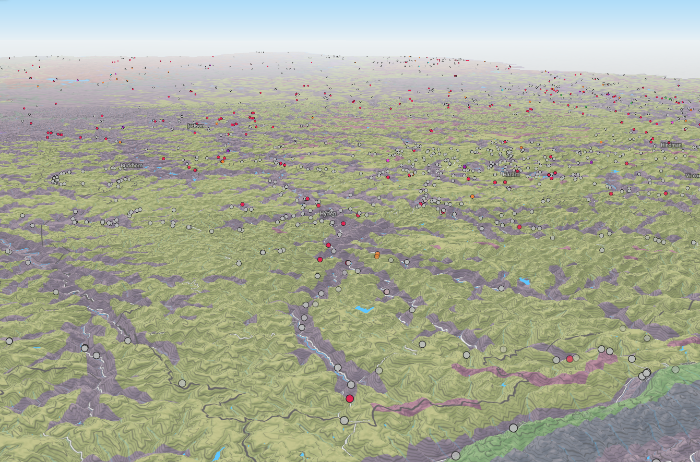
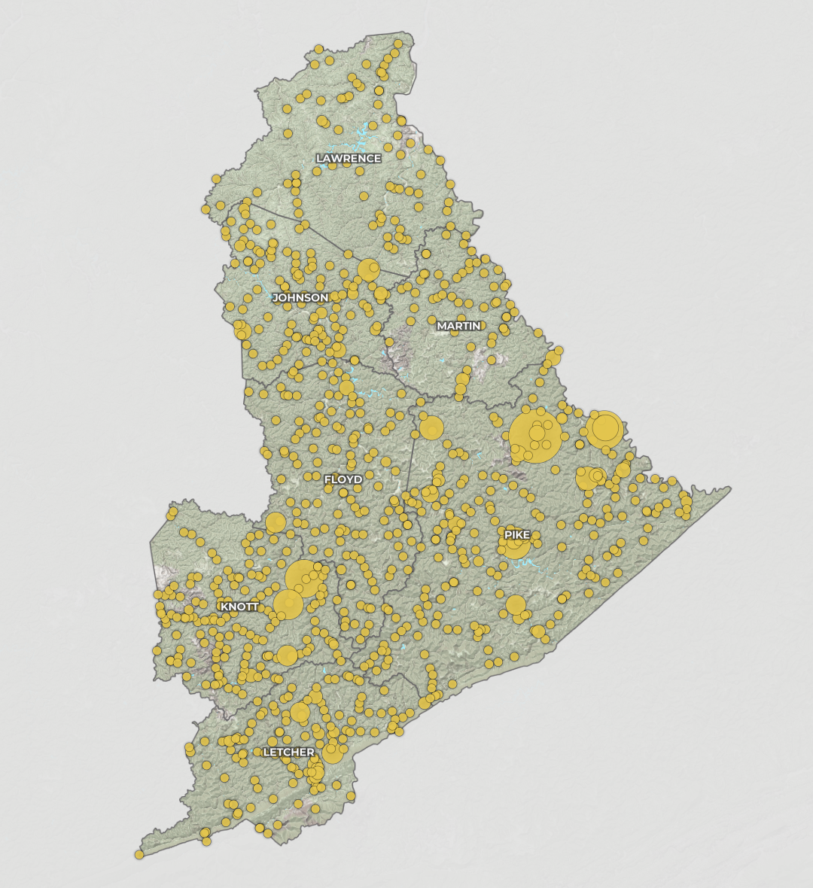
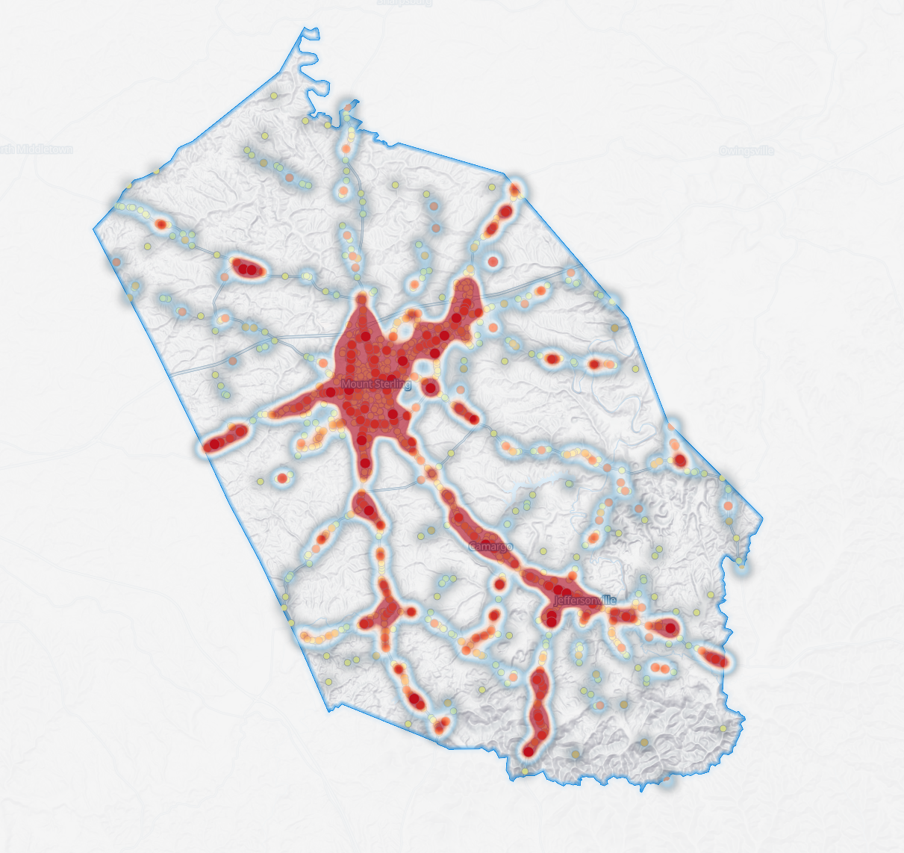
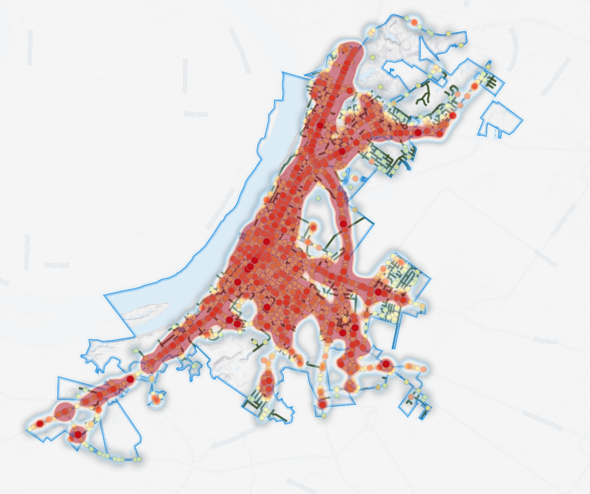
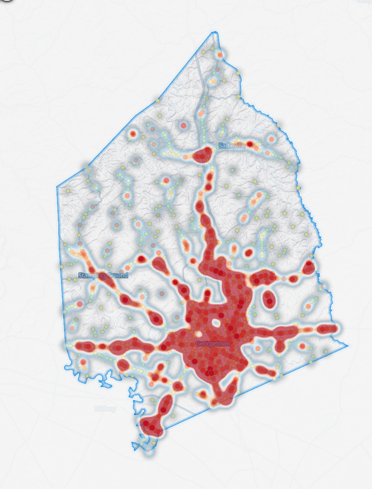
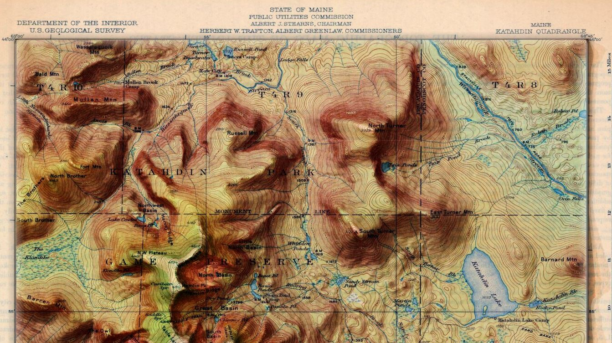
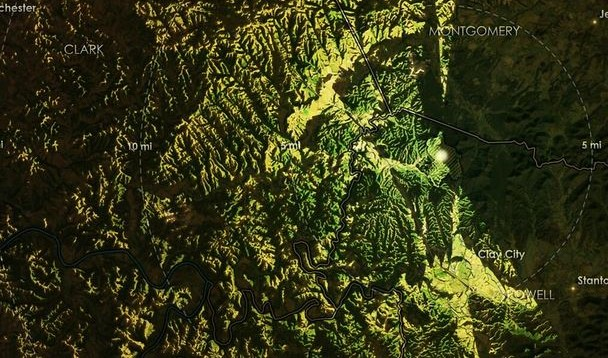

Interactive Web Maps

KY Noise Exposure
MS Digital Mapping capstone exploring noise exposure in Kentucky using US DOT's National Transportation Noise Map data. Vector tiles hosted on AGOL.

Appalachian Landslides
Explores landslide data in Eastern Kentucky from the Kentucky Geological Survey, prepped in QGIS 3.34.2. Developed in NewMapsPlus MAP675.

D12 Landslides & Rockfalls
Landslides and rockfalls within KYTC District 12 for KYTC Item No. 12-5020. Developed for Palmer Engineering in partnership with APS GEO.
Crash & Safety Maps

Montgomery County Crashes
Interactive crash map for Montgomery County, KY. Visualizes five-year collision data to support transportation safety planning. Developed for Palmer Engineering.

Henderson County Crashes
Interactive crash map for teh City of Henderson in Henderson County, KY. Visualizes collision data from 2019 to 2025 to support transportation safety planning. Developed for Palmer Engineering.

Scott County Crashes
Interactive crash map for Scott County, KY. Visualizes five-year collision data to support transportation safety planning. Developed for Palmer Engineering.
Static & Print Maps

Pilot Knob Trail Map
An Imhof-inspired trail map of Pilot Knob State Nature Sanctuary.

Modernized USGS Topographic Maps
USGS topographic maps are classy and beautiful. What if we added modern elevation data to them? This album answers that question.

Illuminated Visibility Maps
Visibility maps for Pilot Knob State Nature Sanctuary, KY and Mount San Jacinto State Park, CA. Inspired by John Nelson's tutorials.